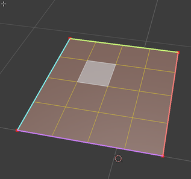
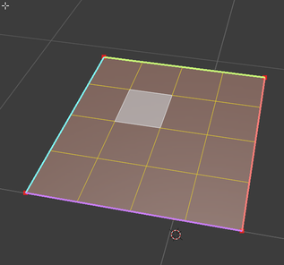

Installation

Links
This is an example link.
This is an example link title.
I get 10 times more traffic from Google than from Yahoo or MSN.
I start my morning with a cup of coffee and The New York Times.
Images

With reference:

Youtube videos
This is an example link.
This is an example link title.
I get 10 times more traffic from Google than from Yahoo or MSN.
I start my morning with a cup of coffee and The New York Times.
With reference:

Youtube videos